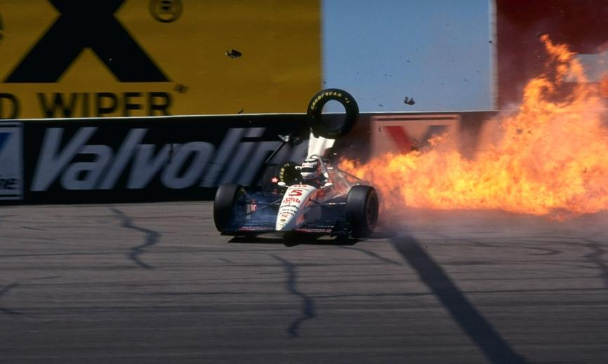

SORTE GRANDE CINCO ANOS DEPOIS

Andretti vence em uma corrida de sobrevivencia: os dois pilotos da Penske, Tracy e Fittipaldi, dominaram até irem para o muro
PHOENIX — La vita ricomincia a cinquantanni. O, per la precisione, a cinquanta-tré aènni, un mese e una settimana. La cinquantaduesima vittoria di Mario Andretti è arrivata a un lustro di distanza dal successo di Cleveland nell’88. Ed è arrivata a sorpresa anche per i canoni della Indy che, sul primo ovale della stagione, ha dato fondo a tutte le sue caratteristiche di spettacolarità. Domenica sera Carl Haas tirava beato boccate dal suo sigaro, dopo averlo masticato nervosamente per tutto il weekend: prima causa l’incidente di Mansell (di cui leggete a parte) schiantatosi contro il muretto nelle prove libere del sabato; poi per la gara non esaltante che stava facendo l’altro pilota del suo team, quel Piedone sempre cosi generoso ed estroverso. «E invece, per una volta il ragioniere l’ho fatto io — commentava Mario a fine gara — Ho corso al risparmio, badando a finire la gara a un ritmo non troppo elevato». Insemina, Mario ha giocato la carta della prudenza e gli è andata bene. Ma per tre quarti dei 200 giri sull’ovale «corto» più veloce dell’Indy, la corsa ha avuto i colori bianco-rossi del team Penske. Dopo una prima, brevissima sfuriata di Andretti sr, che in partenza ha bruciato il poleman Goodyear dietro alla pace-car, ci ha pensato Paul Tracy a imprimere alla gara un ritmo indiavolato. Un dominio così netto non si vedeva da un pezzo. Il venticinquenne canadese era arrivato a doppiare Bobby Rahal (sempre più in crisi con l’ex telaio Truesports) dopo appena otto giri; trascinando nella sua volata Goodyear e Fittipaldi. Ma dopo cento giri Paul aveva almeno un giro di vantaggio sugli inseguitori più diretti e sembrava finalmente avviato a conquistare quella vittoria che manca ancora, assurdamente, dal suo palmares. Nemmeno le prime bandiere gialle, uscite dopo che la Penske di Johansson aveva reso l’anima a bordo pista, erano bastate a metterlo in crisi. Poco dopo un problema al cambio aveva tolto di mezzo anche Goodyear, oltre a Rahal. Tracy e la Penske sembravano i re dell’Ari-zona. E invece... CARAMBOLE. E invece la Indycar non dà niente per scontato. Prima a incendiare l’ambiente ci hanno pensato i duelli ravvicinati tra Fittipaldi e Robby Gordon, ancora incredibile dopo il podio di Surfers Paradise, nonostante a Phoenix avesse dovuto partire a fondo griglia. Poi è iniziata la sequenza delle carambole contro il muretto. Motivabili soprattutto con eccessi di grinta su un asfalto che, perfetto per metà gara, si faceva via via più scivoloso per via del caldo. Proprio Gordon ha stampato la sua Lola-Ford sul muro della curva 1, la più insidiosa, costata tanto cara a Mansell. Il pilota di A.J. Foyt ha scagliato via con rabbia il casco mentre in pista rientrava la pace-car. Ma anche il duo Penske, in testa davanti a Guerrero, ha avuto di che mordersi le mani. Prima il botto di Tracy, avvicinatosi troppo alla vettura di Vasser, ha tolto di scena il protagonista della gara al 153. giro; poi, alla ripresa delle ostilità dopo la pacecar; anche il più esperto Fittipaldi è partito in una strana piroetta, causata (come leggete a parte) dall’afflosciamento di un pneumatico dopo una collisione. In quel momento la gara era al 170. giro: di lì in poi non ha più avuto storia, con Mario Andretti in testa fino al traguardo. Il duello fra Al Unser junior e il sorprendente Jimmy Vasser, terzo aH’arrivo dietro Andretti e Boesel, ha tenuto desto l’interesse degli spettatori. Ma